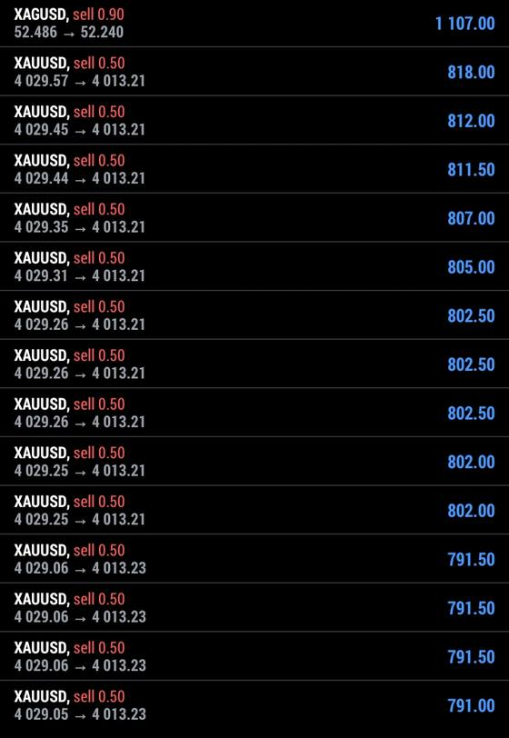
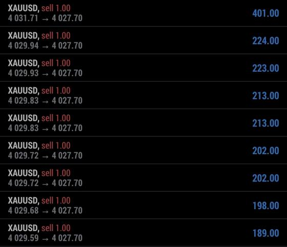
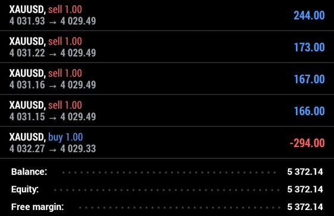
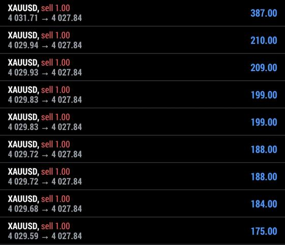
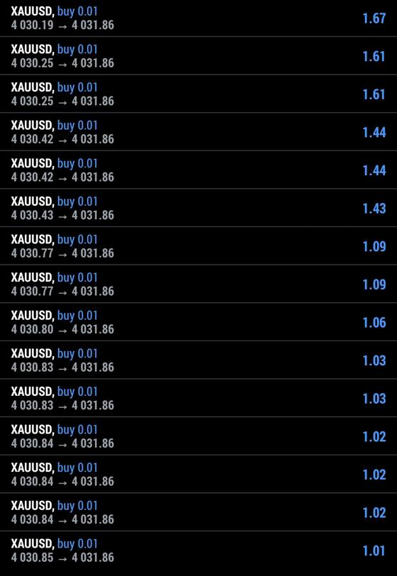
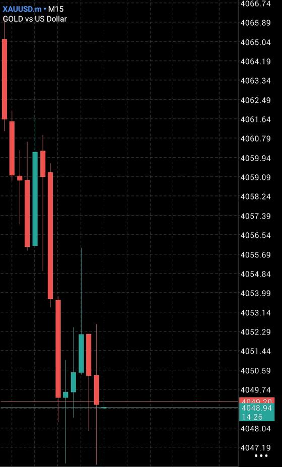
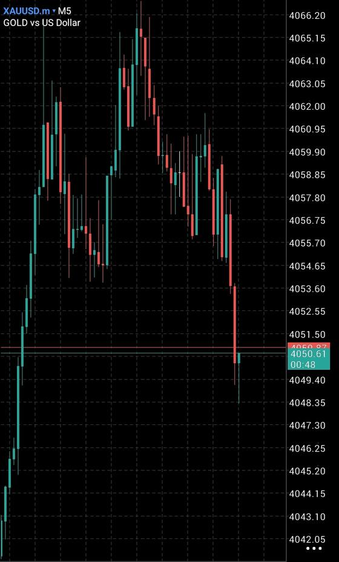
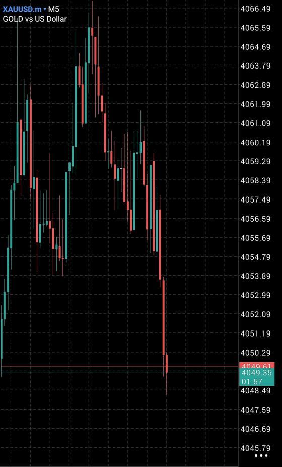

01
Websites that load fast on a phone
Portfolio and business sites, built phone-first with clean code you can hand on.
See my workDeveloper based in Kenya. I build web projects, I’m learning cybersecurity, and I teach people how to trade Deriv and forex.
See my workPortfolio and business sites, built phone-first with clean code you can hand on.
See my workDashboards, calculators and small apps that people actually use.
See the toolsI check my own builds against the OWASP Top 10 and practise in hands-on labs.
See the checklistTell me what you need and I will reply with the next step.
I’m a developer in Kenya who builds websites, studies how systems get broken, and teaches people to trade with a plan.
I like work where the details decide the outcome: a layout that holds up on a small phone, a form that can’t be abused, a risk rule that keeps an account alive. I build alone and with clients, and I explain what I’m doing as I go.
Right now I’m deepening my security skills while I keep shipping web projects and teaching Deriv and forex.
Pick what you need. Tell me about it in one short email and I will reply with the next step.
Lessons that start with risk and charts, then move to placing trades on a platform.
A fast, responsive site for you or your business, with a clear way for people to contact you.
Small web tools that make trading habits easier to keep.
A few projects I’ve built. Open a live site to explore the work in full.
CLIENT PROJECT · PORTFOLIO
A personal portfolio and photo archive for model Baraka Joshua, bringing together his Nairobi story, fashion work and curated studio, Polaroid, runway and editorial galleries, with contact links and an admin area for managing the site.
CLIENT PROJECT · HOME SERVICES
A home-services website serving Nairobi and Kajiado County, presenting cleaning, moving, repairs, painting and more. Visitors can explore before-and-after results, find service details and FAQs, then request a booking through contact or WhatsApp.
The parts of a project I can take from design to launch.
Front-end first, built for mobile with HTML, CSS and JavaScript. I also use tools like Docker and build the backend.
Learning how systems get attacked so what I build is safer by default.
Interfaces for charts, trade logs and risk calculations around Deriv and forex.
Layouts that work from small phones to large desktop screens.
Small files, optimised images and clean code so pages open quickly.
Git and GitHub for every project, with clear commits and backups.
What I’m studying and practising, in the order I’m working through it.
How traffic moves: IP, DNS, HTTP and the ports services listen on.
Permissions, processes and logs, so I can read what a system is doing.
Common flaws such as injection and broken access control, and how to build against them.
Practising on legal training platforms and writing up what I learn.
Applying it to my own sites: validated input, safe forms and no exposed secrets.
Trading is a skill you can practise. I teach it with rules for risk first, and entries second.
Real trades from my gold and silver account, cropped to the trades themselves. Hover to pause, tap to enlarge.





Some of these show open trades, so the profit was still moving and can change or reverse. They do not guarantee future results, and trading can lose you money.
Tools I build, or plan to build, for traders and students.
Enter balance, risk percent and stop distance to get a position size.
Log each trade, tag the setup and see which ones actually pay.
A simple site where students find notes, charts and exercises.
Charts and ideas from my trading and my work. Hover to pause, tap to see one full size.



Every featured project gets the same four parts, so you can see my thinking and not only the screenshots.
Who needed it and what was going wrong before.
What I designed, coded and decided myself.
Tools used, key choices and what I would change.
What changed after launch, with a live link.
The twelve terms I explain first when I teach, in plain words.
The standard small unit of price movement in a currency pair.
The gap between the buy and sell price. It is a cost every trade pays.
The size of a trade. Bigger lots make each pip worth more, in both directions.
Borrowed exposure that lets you control a larger position than your balance. It magnifies losses as much as gains.
The part of your balance held to keep a leveraged position open.
An order that closes a trade at a set loss so one bad trade stays small.
An order that closes a trade when it reaches your target.
Price areas where the market has often paused or turned.
What you stand to gain compared with what you risk on a trade.
The fall from an account’s peak to its lowest point afterwards.
How easily you can buy or sell without moving the price.
The difference between the price you expected and the price you got.
The ten web risk categories from OWASP’s 2021 list. I check my own sites against each one.
Six rules I follow on every project.
I design for the smallest screen, then scale up.
Working versions you can open and judge early.
Every field is validated, on every form.
Fewer files and smaller images load faster on mobile data.
Clear names and structure so anyone can pick it up later.
I tell you what I chose and the reason, not only what I did.
The same five steps for every project, so you always know what comes next.
Your goal, your audience and any examples you like.
What I build, what you provide and how long it takes.
I share working previews so you can react early.
We check the key pages and forms on phone and desktop.
I deploy it and show you how to look after it.
These four things are written down and agreed first, so there are no surprises.
The pages, features and content that are included.
Domain, hosting and any paid tools, discussed separately.
How many feedback rounds there are and what counts as extra.
Who owns the code and how the site goes live.
Trading Deriv and forex carries a real risk of losing money, and leverage can magnify losses. My lessons are education, not financial advice, and I cannot promise profits. Practise on a demo account first.
The answers most people want before they get in touch.
It depends on the pages and features. Tell me what you need and I will send a written quote before any work starts.
The quote lists everything included. Domain names, hosting and paid tools are separate costs, and I will name them up front.
No. A short description of your goal is enough to start. Text and images can follow as we go.
A simple site takes less time than a site with many pages or tools. I give a timeline when we agree the scope.
Yes. Send me the link and tell me what bothers you. I will say what I would change first.
Yes. We start with the basics and risk rules, and you practise on a demo account before using real money.
No. I teach you how to read charts and manage risk so you can make your own decisions. Nothing I teach is a guarantee of profit.
Tap my name to reach me by email or WhatsApp.